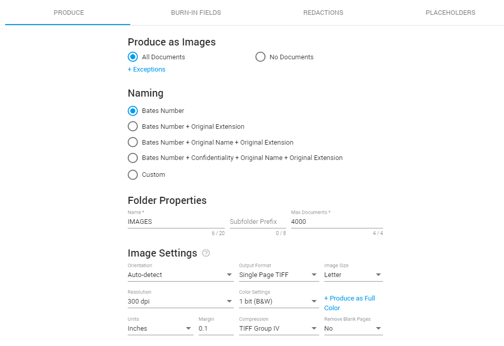
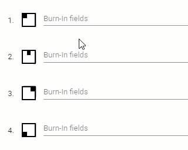

Image Settings
Step two of the production wizard. This is where you define if and how documents are produced as images.
How to start the Production Wizard
In the Document List, select the settings icon
Then, select Productions > Create for Selection/Documents. For more information on starting a production, see Productions.

Produce
Produce as Images
- All Documents
All documents added to this production, will be produced as images.
+ Exceptions: Selected file types will be produced as natives.
- No Documents
No documents added to this production, will be produced as images.
However, there will be image placeholders.
When selected, continue with Native Settings.
Naming
Define how you want to name your images. The first three options are most commonly used.
- Bates Number
Bates Number as defined in step 1 of the Production Wizard.
- Bates Number + Extension
The extension (file type) of each document will be added to the bates number.
- Bates Number + Original Name + Extension
The original name of the document will be placed between the bates number and the extension (file type).
- Bates Number + Confidentiality + Original Name + Extension
If all images are confidential, you can add that to the naming.
- Custom
Alternatively, define your own naming convention. Add metadata (fields) from your matter.
Folder Properties
Define where you want to store your images.
- Name
The name of the folder in which the images will be saved.
- Subfolder prefix
The subfolder prefix will always be followed by a number.
- Max documents
Define the maximum number of documents allowed in a folder.
Each image is one page of a document. The images of one document will never be split over two folders. The first document that is too large to fit in one folder, will be placed in its entirety in the new following folder. If the document is still too large for this new folder, it will be placed in this folder nevertheless.
Image Settings
- Orientation
Produce all images with the Portrait, Landscape or Auto-detect orientation. With Auto-detect, images can be produced based on the detected orientation of the original document.
Images are downscaled to fit (keeping the aspect ratio). They will never be cropped.
- Output format
Choose from Singlepage TIFF, Multipage TIFF, Searchable PDF and Searchable PDF (quality).
Each (Searchable PDF) profile has a different impact on the quality and performance of the OCR process used to create the searchable PDF. It will have no influence on the quality of images. It will mostly be noticeable with the text in files of an already lower quality.
- Singlepage TIFF
Creates a TIFF image consisting of 1 page. - Multipage TIFF
Creates a TIFF image consisting of 2 or more pages. - Searchable PDF
Creates a PDF file that can be searched.
Choose this option for fast performance, but slightly lower quality (mostly noticeable with the text in files of an already lower quality).
- Searchable PDF (quality)
Creates a PDF that can be searched.
Use this option for high quality, but slower performance. Please note that this option is not recommended as the performance is considerably slower.
- Image size
Choose from Letter (8.5x11.0 in/216x279 mm), A4 (8.3x11.7 in/210x297 mm), Legal (8.5x14.0 in/216x356 mm) or Auto (the original image size will be produced; this will overrule the Orientation setting).
- Resolution
The lower the resolution, the less disk space you will need. However, the risk of data loss will increase. Choose from 100, 200, 300, 400, 500 or 600 dpi.
- Color settings
Recommended Settings
For black and white: 1 bit color and 300 dpi
For color: 24 bit color and 200 DPI
Not Recommended
8 bit color and 8 bit greyscale. Use these option only for specific use cases.
When data loss might be an issue, for example when converting from color to black and white, it is advised to produce color images.
However, be careful, because the resulting files will take up more space.
- + Produce as Full Color
If you selected 1 or 8 bit, you can produce - as an exception - a number of images in full color (24 bit).
Select the file types you want to be produced as full color.
- Units and Margin
The margin can be set in inches or centimeters.
Fields are burned next to the image. If the margin is set too small, fields will be burned (partly) on top of the image.
- Compression
You do not need to define the Compression, as it is related to the chosen color setting. It is displayed here for your convenience.
- Remove blank pages
This option is often used for spreadsheets. As spreadsheets can be very large, they are often divided into several pages. Information may appear on only a few pages. The remaining blank pages can be removed.
Sometimes it is not advised to remove blank pages, as this may in itself be important information. For example, someone might have deleted incriminating content.
Burn-in Fields
Burn-in fields (electronic stamping) cannot be removed and will always appear when the document is printed.
The image is shrunk slightly and the stamp is applied to a small margin on each page.
Burn-in Settings
Type [ or Ctrl+space to select a field.

Appearance
Define the font family, font size, date format and the margin.
It is recommended to always define a small distance from the edge of the paper, so no information will be lost when the page is printed.
Redactions
Include Redactions
Redactions are defined during the review process. During production, the redactions to the sensitive information can be included.
Redaction Appearance
Change the appearance of the redaction. Choose from
- As on document
- White with black borders
- Transparent with black borders
- Custom
Specify the Fill Color, Font Color and Border Color; Select the field and adjust it.
You can also make the colors transparant.
Include Redactions Exemptions
Reviewers may have added reasons to explain why the information has been redacted/obscured, the redaction exemption reasons.
These reasons can be added to the production and burned into the image.
Select position of the Redaction Exemption
Choose from In left margin or On top of a redacted area.
|

|
Note: If redactions are added to documents produced as images, the related text files will not be produced, since it is not possible to redact text files.
Even if only a single word is redacted, the related text file will not be produced.
Please note that fields cannot be redacted. Fields that contain text that should have been redacted should not be included in the production. Exclude those fields from the load file.
|
Placeholders
Placeholder documents replace and define the unprocessed files. A file might not be produced for various reasons, most commonly for privileged or technical reasons.
When files are only produced in the native and/or text format, an image placeholder will be produced for each file.
In this placeholder, information about the file (that is not produced as an image) will be included. A placeholder document is an image Tiff file.
Default Placeholder
Select one or more default placeholders.
-
File name
This will be the file name used after production, with Bates number.
-
File path
This will be the file path used after production.
-
Original file name
-
Original file size
-
Originial file path
Custom Placeholders
Custom placeholders can contain document field expressions.
Every field and production metadata can be added as output.
Example:
"This document could not be produced. Please see the production log for the exact reason. Bates number: [docproperties:bates]; Original file path: [docproperties:path]"